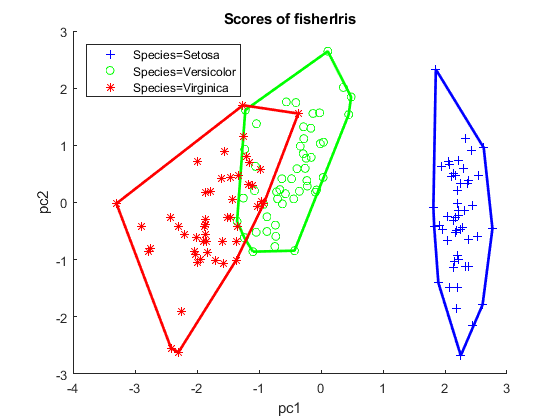

Contents
%DEMO_PCA_IRIS One-line description here, please. % % output = demo_pca_iris(input) % % Example % demo_pca_iris % % See also % % ------ % Author: David Legland % e-mail: david.legland@inra.fr % Created: 2017-10-31, using Matlab 9.3.0.713579 (R2017b) % Copyright 2017 INRA - Cepia Software Platform.
Apply PCA on Iris data set
% Read data from a csv file tab = Table.read('fisherIris.txt'); % Apply Principal Component Analysis on the quantitative variables irisPca = Pca(tab(:, 1:4), 'display', 'off'); % The result is a Pca object, containing Table object for scores, loadings % and eigen values disp(irisPca);
Principal Component Analysis Result
Input data: fisherIris
scaled: true
means: <1x4 double>
scores: <150x4 Table>
loadings: <4x4 Table>
eigenValues: <4x3 Table>
Score Plot
% Score plot can be displayed with automatic labeling of axes
figure;
scorePlot(irisPca, 1, 2);

Loading Plot
% Loadings can also be displayed with automatic labeling
figure;
loadingPlot(irisPca, 1, 2);

Score plot with groups
% To display scores with group labelling, simply call the plot method on % the score object stored in Pca result figure; scatterGroup(irisPca.scores(:, 1), irisPca.scores(:, 2), tab('Species'), ... 'LegendLocation', 'NorthWest');